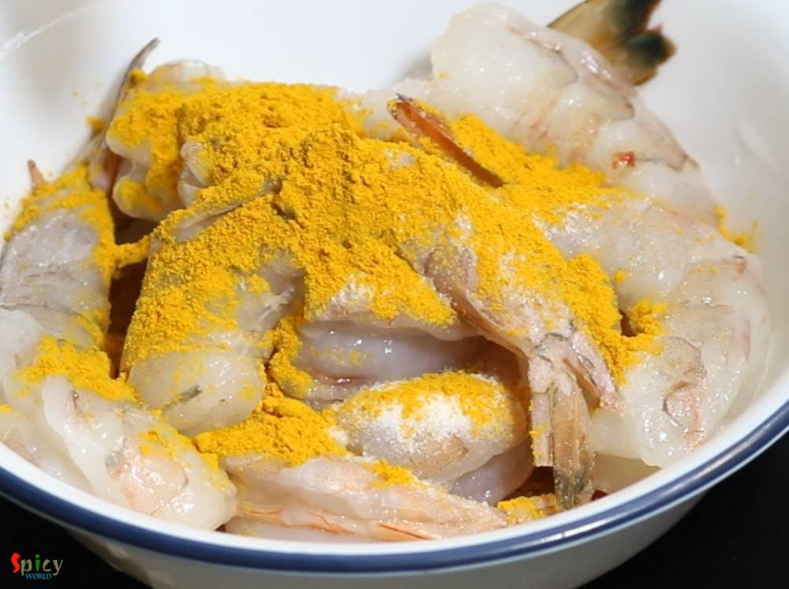
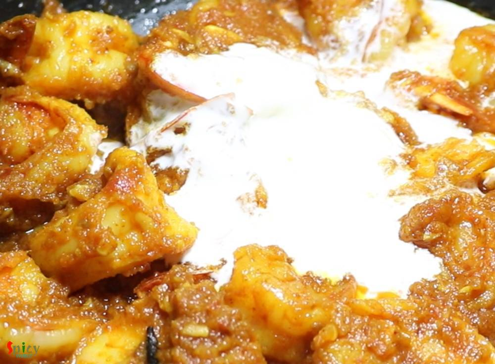
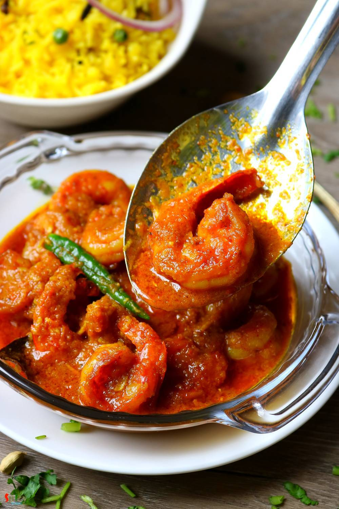

Simple and Easy Recipes
Chingri Macher Malai Curry / Prawn curry with Coconut Milk
© 2016 Spicy World, Published on: Apr 12, 2019
Chingri Macher Malai Curry is a traditional Bengali recipe rather delicacy, where Golda Chingri or Lobster is cooked in onion - tomato gravy and then addition of coconut milk makes the curry more rich and creamy, thus the name 'malai curry'. Though I made it with jumbo shrimps as we both are not fan of lobster. Taste of this Prawn malai curry came out delicious, neither too spicy nor too sweet, perfectly balanced. I served it with mishti pulao aka basonti pulao and the pair was heavenly. Do try this recipe and let me know how it turned out for you.

Ingredients
- 12-15 jumbo prawns or 2 lobster per person.
- Paste of a small onion.
- 1 Tablespoon of ginger garlic paste.
- Puree of a small tomato.
- 1 Tablespoon of yogurt.
- 5-6 Tablespoons of thick coconut milk.
- Salt and sugar as per your taste.
- Spice powder (2 Teaspoons of turmeric powder, 1 Teaspoon of red chili powder, 1 Teaspoon of kashmiri chili powder).
- Whole spices (2 bay leaves, 2 green cardamom, 1 small cinnamon stick, 2 cloves).
- 1/4th cup of mustard oil.
- 1 green chili.
- 1 Teaspoon of garam masala powder.
- 1 Teaspoon of ghee.
- Little hot water.


Steps
Ad some salt and 1 Teaspoon of turmeric powder to the deveined prawns. Mix well and keep aside for 15 minutes.
Heat mustard oil in a pan.
Add the marinated prawns, cook on medium high heat for 3 minutes, not more then that otherwise they will become chewy.
Then take them out from oil.

In that same oil add all of the whole spices. Saute for few seconds.

Add onion paste, cook for 7-8 minutes on medium flame.

Add ginger garlic paste, cook for 3 minutes.
Add tomato puree, mix well and cook for 5 minutes.

Then add some salt and sugar along with all of the spice powder. Mix well for few minutes.

Add yogurt, mix well and cook for another 3-5 minutes.

Now add the fried prawns along with the drippings, mix well for 3-4 minutes.
Then add coconut milk, mix well.
Now add little hot water, cover the pan and cook for 5 minutes.
Lastly add green chili, ghee and garam masala powder. Mix well and turn off the heat.
Let it rest for 10-15 minutes hen serve.
Your Chingri Macher Malai Curry is ready to serve.
Serve this hot with mishti pulao, fried rice or plain steamed rice ...
")